Na sprzedaż Mazda 6 z polskiego salonu w wersji wyposażenia SKYPASSION. Kolor biała perła (SNOWFLAKE WHITE PEARL)
Data pierwszej rejestracji: 08.12.2016
Auto z fabryczną powłoką lakierniczą, bezwypadkowe, wszystkie szyby oryginalne.
NR. VIN JMZGJ693871354488
Do 85tyś km serwisowana w ASO MAZDY, później w niezależnych serwisach.
Olej i filtr w silniku wymieniany co 8 tyś max 10 tyś km (Mazda Ultra 5W-30)
W skrzyni biegów ostatnia wymiana oleju razem z filtrem była na 120tyś. (RAVENOL ATF FZ)
Auto posiada opony letnie z felgami 19 cali widoczne na pierwszym zdjęciu,
opony zimowe 17 cali, dodatkowo bagażnik dachowy i dywaniki gumowe oraz welurowe.
Auto do obejrzenia w Warszawie na Ursynowie.
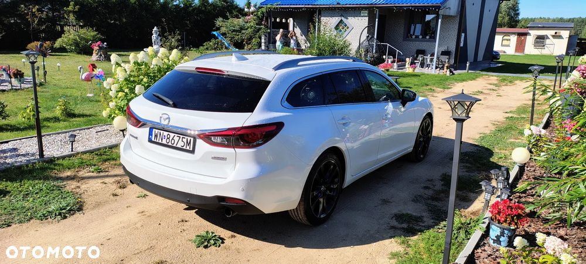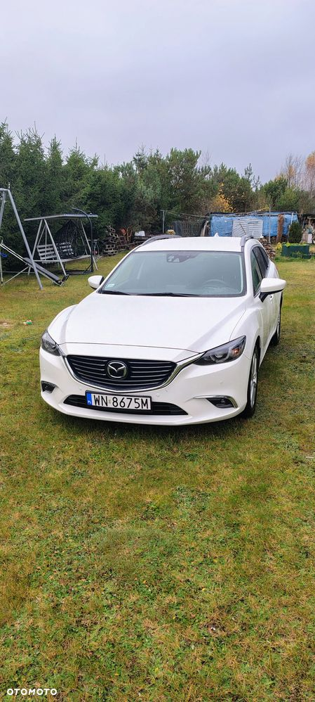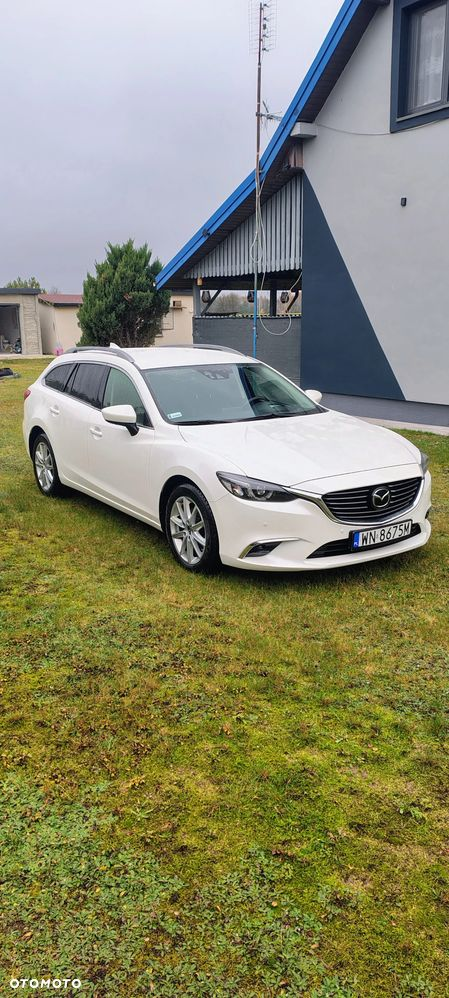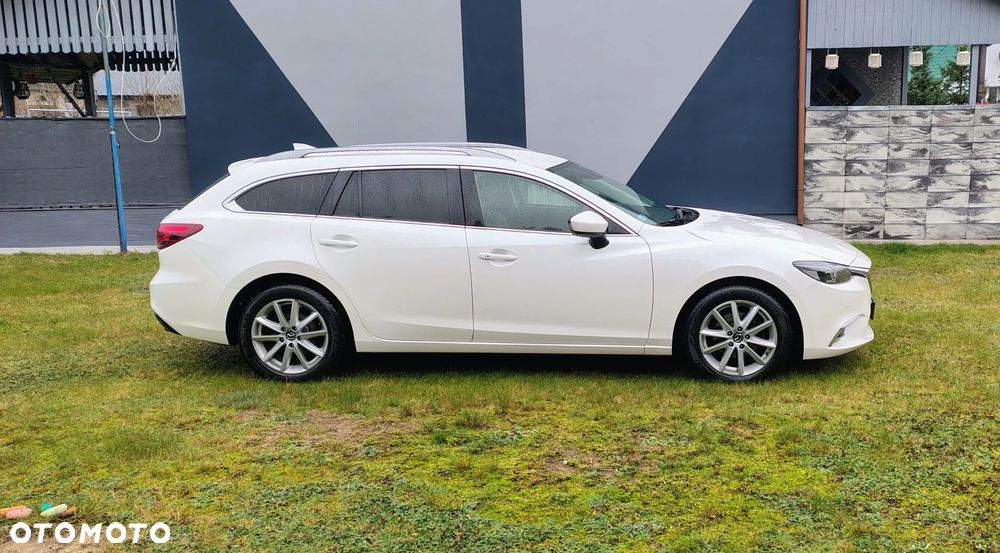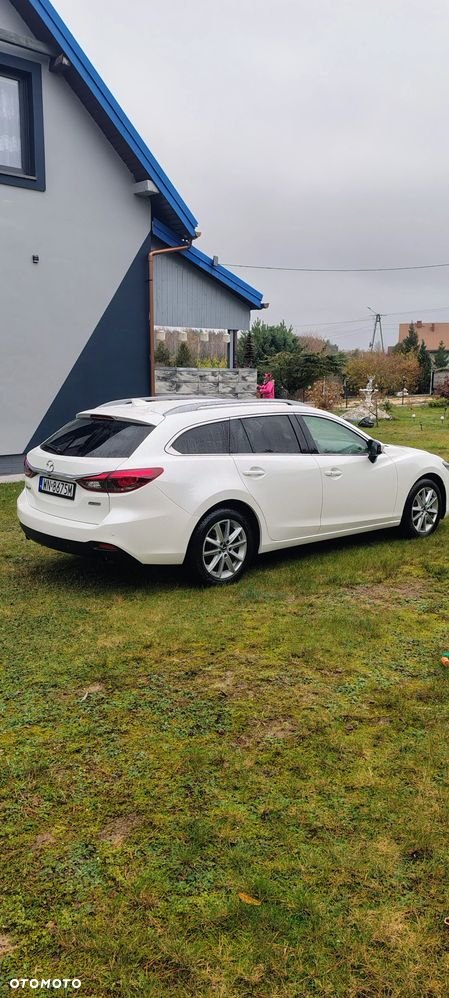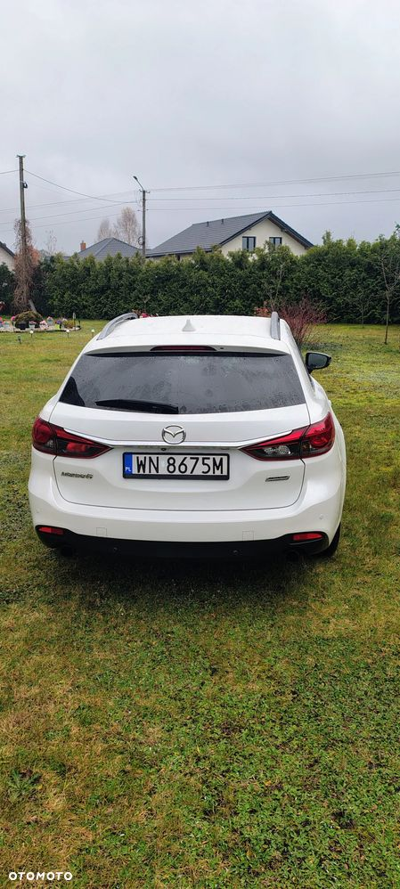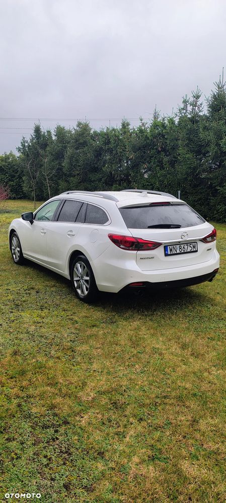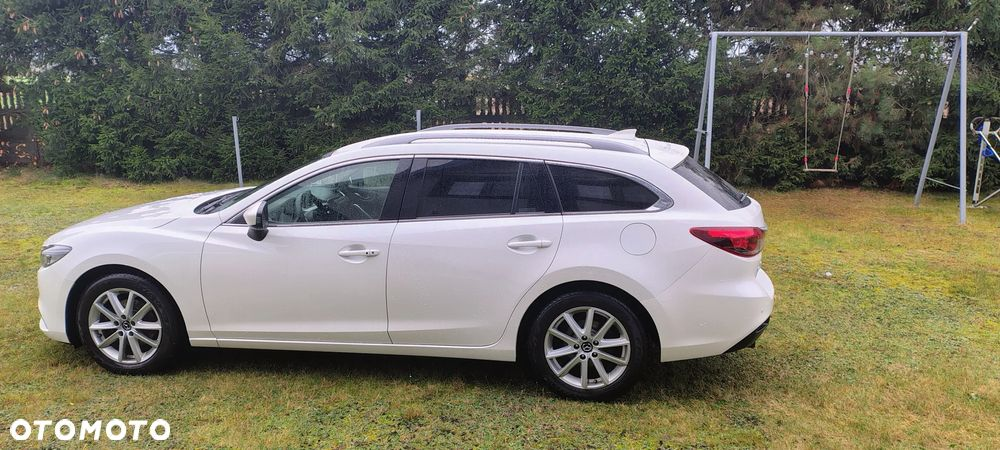 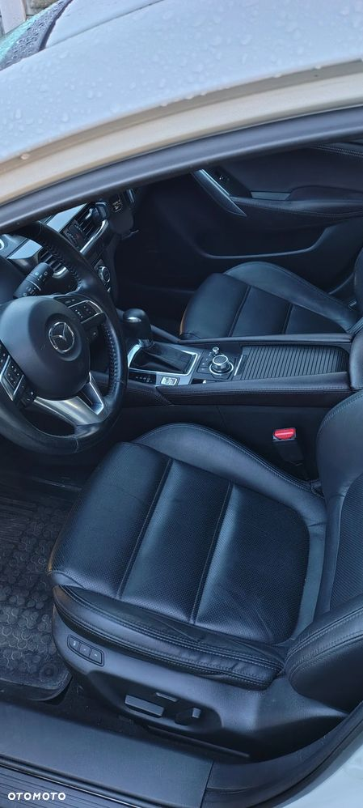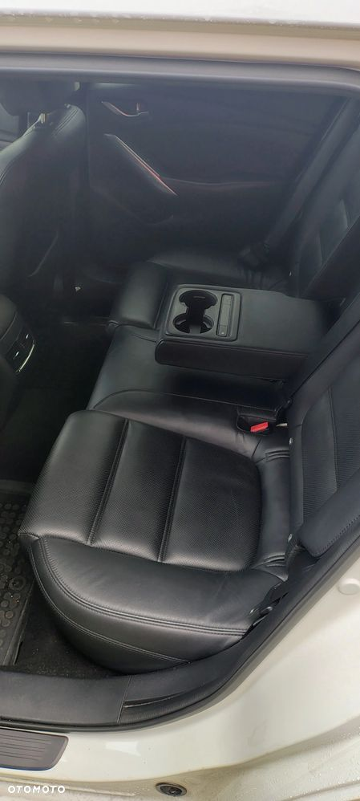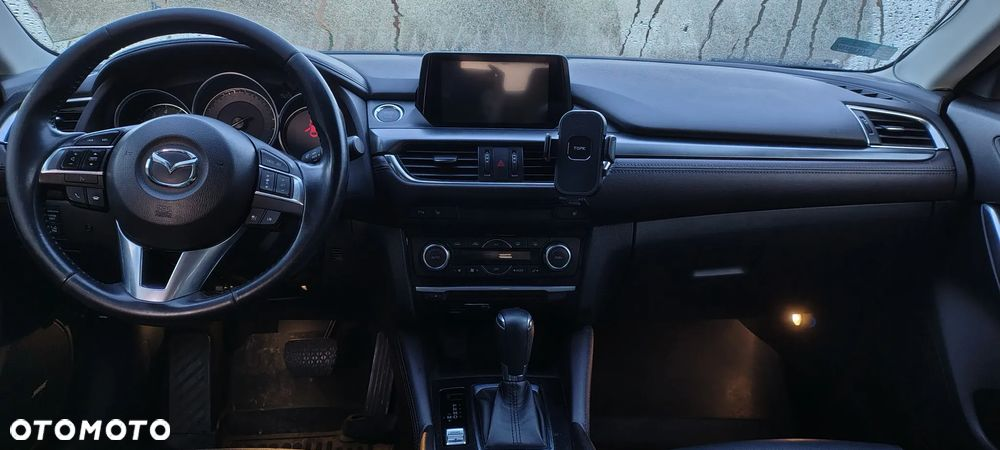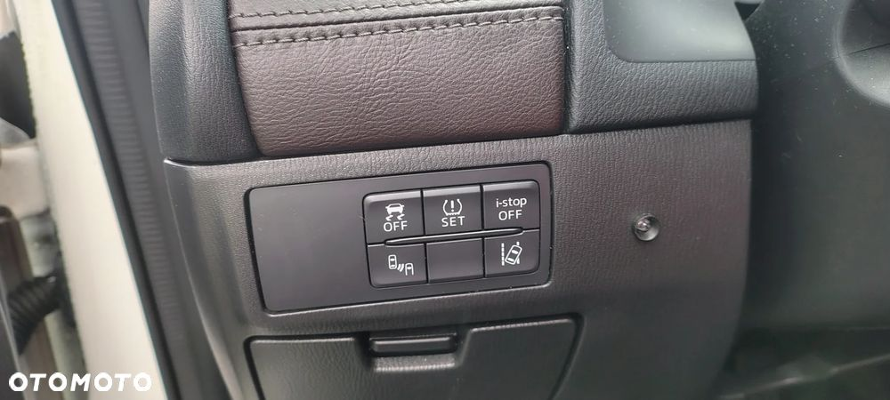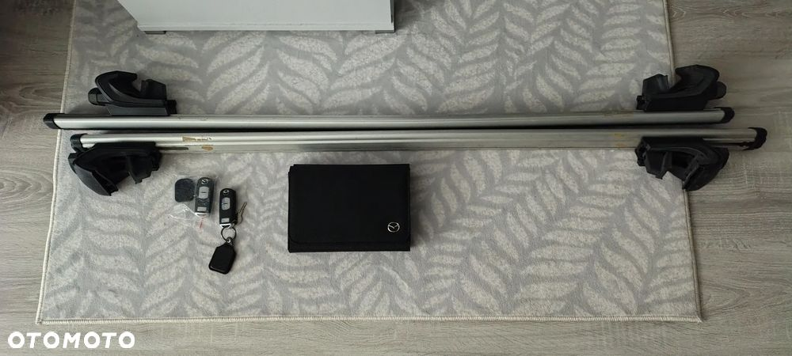
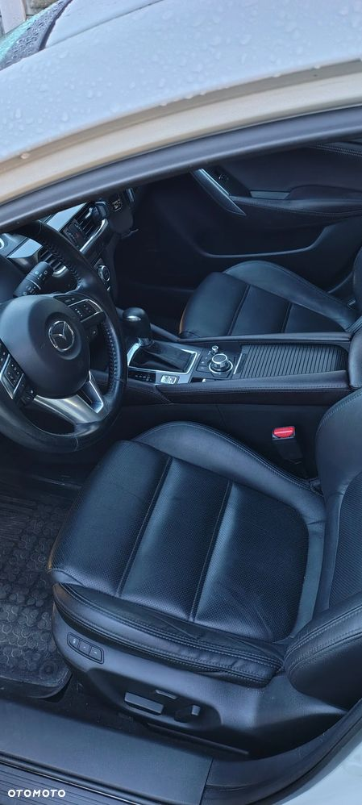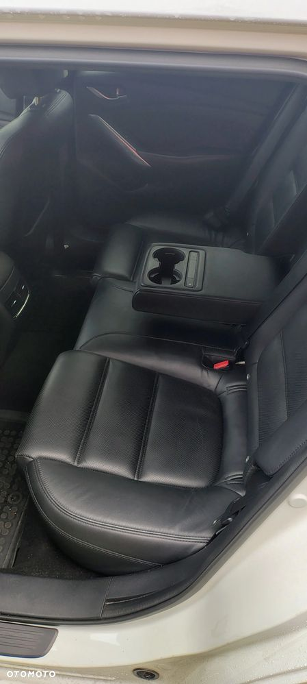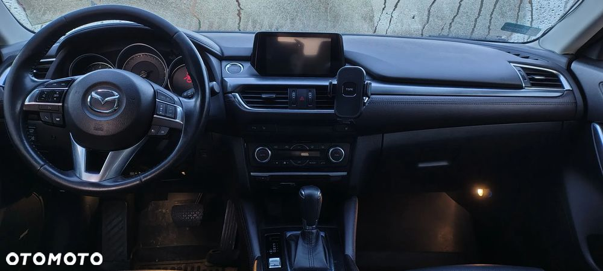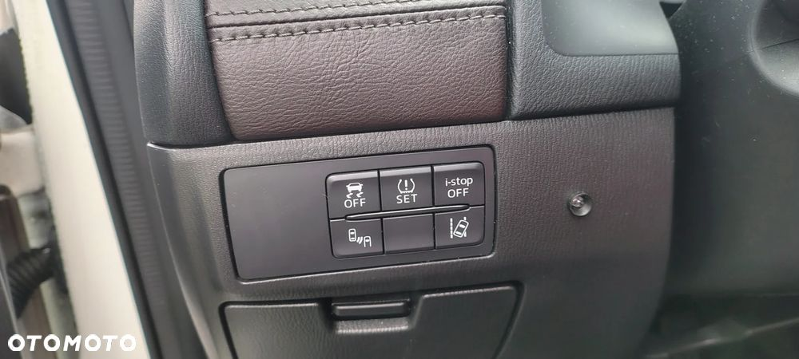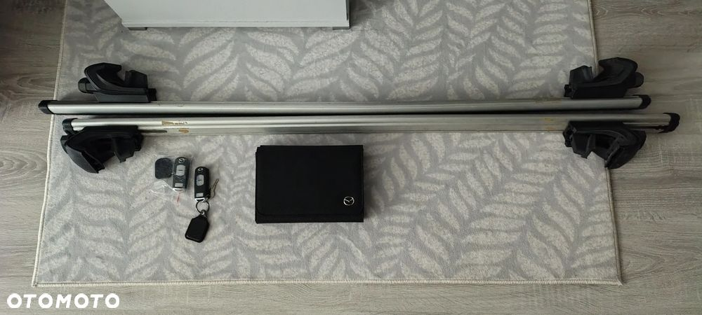